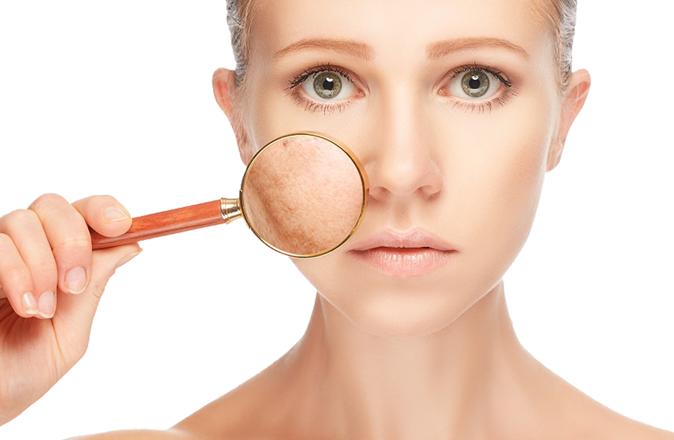

수분 공급 습관–건조한 피부를 다시 아름답게 만드는 법
균형 잡힌 영양으로 피부 케어를 시작하세요–속에서부터 피부 관리하기
- - 수분이 부족하면 피부가 건조해지므로, 하루에 물을 2리터 이상 마셔야 합니다.
- - 견과류를 섭취하세요! 에너지를 공급하고 건강한 지방, 미네랄, 비타민을 많이 함유하고 있으며, 맛도 좋습니다.
- - 기름진 바다 생선과 말린 살구는 몸에 칼슘을 공급하고 노화방지에 효과가 있습니다.
- - 당근 주스와 토마토 주스는 건강한 비타민으로 가득합니다. 아마씨 오일을 추가하면 흡수가 특히 더 잘 됩니다.
- - 균형 잡힌 건강한 다이어트는 우리 몸의 가장 큰 기관인 피부를 건강하고 강하게 만듭니다.
- - 몸 속의 아름다움에 대해서는 여기서 더 알아보세요.
건성 피부–그 뒤에 감춰진 것
건강한 피부는 생기와 탄력이 넘칩니다. 하지만 겨울에는 건강한 피부도 수분 균형이 무너질 수 있습니다. 날이 추우면 피지선에서 유분이 적게 만들어지고, 이러한 지질층의 보호가 없으면 피부의 수분 함유 수준을 유지하기가 어렵습니다. 또한, 피부 아래의 혈관이 수축해 산소 공급도 줄어듭니다.
이렇게 되면 피부가 땅기는 느낌이 들고 벗겨지며 붉게 변합니다. 정강이나 팔꿈치, 무릎과 같이 피부가 얇거나 피하(지방)조직이 없는 부위는 특히 위험합니다. 건성 피부의 원인이 궁금하면 여기서 더 알아보세요.
겨울철의 위급 상황–피부를 보호하는 법!
니베아 바디 제품으로 피부를 보살피는 방법이 있습니다. 피부에 보습효과를 공급합니다.
입술은 겨울에 더 특별하게 케어해야 합니다
입술은 피부가 얇고, 지질층을 만드는 피지선이 없기 때문에 보호가 되지 않아 민감합니다. 이것이 입술이 겨울에 특히 건조해지고 갈라지는 이유입니다. 입술을 올바르게 관리하는 방법을 여기서 더 알아보세요.